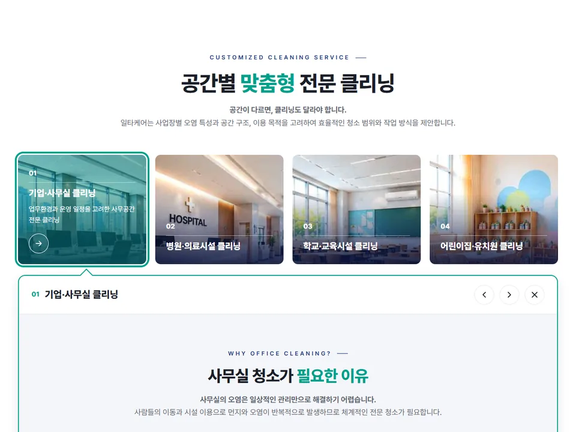
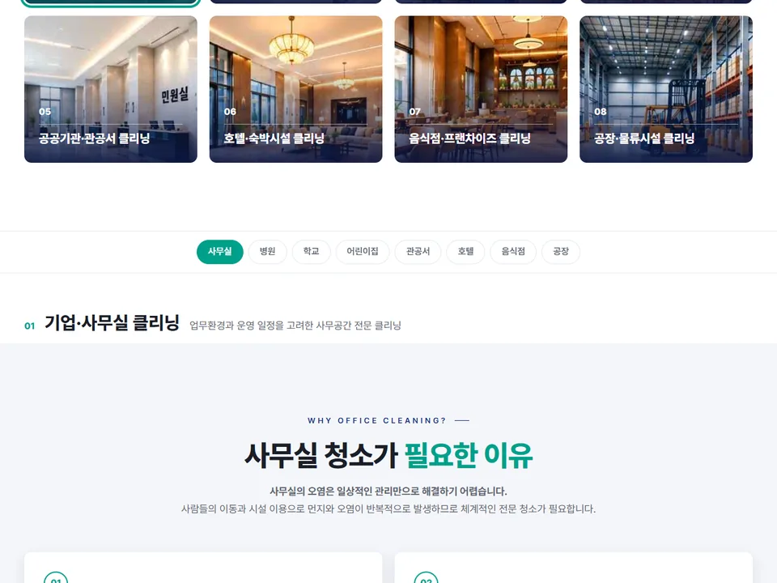
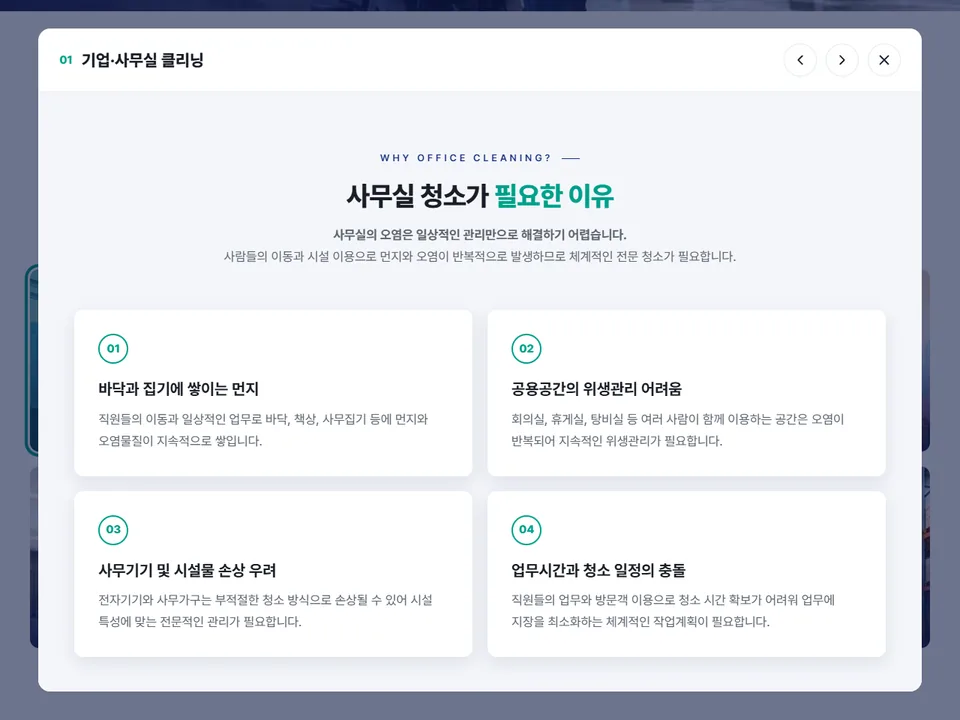
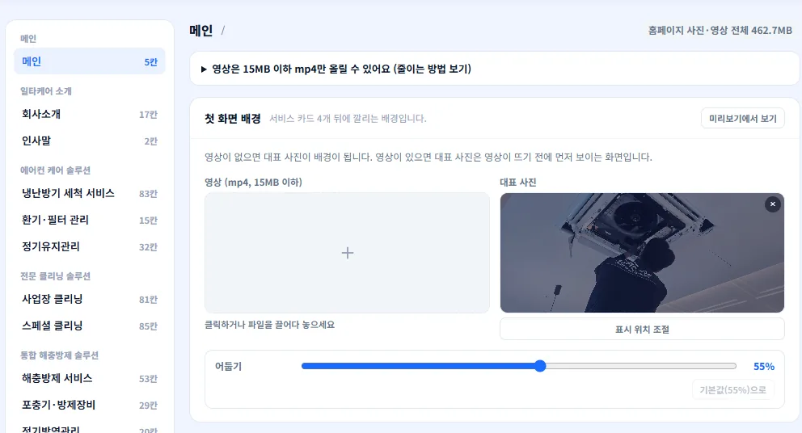
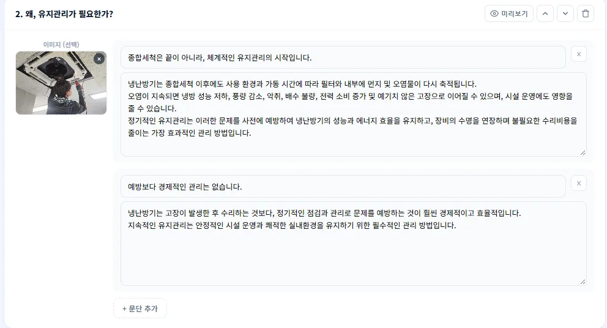

시안 1 · 그 자리에서 펼치기
고객 중심 홈페이지 제작
만들기 전에는 시안 3개 중에서 고르고, 만드는 중에는 미리보기로 보고,
완성 후에는 고객님이 직접 바꾸는 홈페이지를 만듭니다.
주도권이 업체에 있어서 생기는 일입니다.
저희는 처음부터 끝까지 고객님 쪽에 둡니다.
만들기 전
시안 하나를 고치고 또 고치는 대신, 처음부터 방향이 다른 3안을 나란히 놓고 고릅니다. 말로 설명하기 어려운 취향도 직접 보면 바로 고를 수 있습니다. 일타케어 홈페이지는 배치가 애매한 곳마다 시안을 만들어 8번 골랐습니다.

시안 1 · 그 자리에서 펼치기

시안 2 · 업종 버튼으로 바꾸기 · 고객이 고른 안

시안 3 · 큰 팝업으로 보기
만드는 중
사이트 전체를 한 번에 내밀지 않습니다. 페이지 단위로 만들어서 그때그때 확인받습니다.
비밀번호가 걸린 미리보기 주소에서 실제 화면을 PC와 휴대폰으로 언제든 보실 수 있습니다.
요청하신 내용과, 저희가 먼저 찾은 "확인이 필요한 곳"을 목록으로 정리합니다. 카톡 대화에 묻히지 않습니다.
고친 화면을 미리보기에 다시 올리고, 목록에서 무엇이 반영됐는지 표시합니다.
확인 목록 예시
"원고에는 항목이 4개인데 시안 그림에는 3개예요. 어느 쪽으로 갈까요?"
원고와 시안이 다른 곳은 임의로 정하지 않고, 이렇게 질문으로 돌려드립니다.
완성 후
홈페이지와 함께 고객님 전용 에디터를 드립니다. 정해진 칸 안에서만 바꾸는 구조라, 직접 고쳐도 디자인은 그대로 지켜집니다.
칸마다 사진을 올리면 PC·휴대폰 미리보기에 바로 보입니다. 여러 장은 끌어서 순서를 바꿉니다.
사진에서 꼭 보여야 할 곳을 누르면, PC에서도 휴대폰에서도 그 부분이 잘리지 않습니다.
사진 위 어둡기를 슬라이더로 조절합니다. 밝은 사진을 넣어도 글자가 또렷하게 보입니다.
정해진 칸에서 글을 고치면 실제 화면에 그대로 반영됩니다. 전화번호, 영업시간 같은 내용도 직접 바꿉니다.


말로 듣는 것보다 한 번 만져보는 게 빠릅니다.
그리고, 찾아지게
예쁜 홈페이지도 손님이 못 찾으면 소용없습니다. 지역 검색에 잘 읽히는 기본 구조를 모든 홈페이지에 넣어 드립니다.


알맹이가 직접 운영하는 사이트입니다. 같은 방식으로 설계해 드립니다.
검색 순위는 약속드리지 않습니다. 검색엔진이 잘 읽을 수 있는 구조를 만들어 드립니다.
시·군·구·동 페이지를 늘려
더 넓게 찾아지고 싶다면
그 다음에도
홈페이지는 몇 년을 쓰는 자산입니다. 저희와 계속 함께하지 않더라도 사이트가 멈추지 않도록, 마지막 날 이 4가지를 넘겨드립니다.
일타케어(iltacare.co.kr) 홈페이지 개편. 고객사가 보내준 원고와 시안으로 페이지를 하나씩 만들고, 미리보기로 확인받으며 진행하고 있습니다. 2026년 10월 기준, 정식 오픈 준비 중입니다.
| 비교 항목 | 흔한 제작 방식 | 알맹이 방식 |
|---|---|---|
| 시안 | 1개를 받아 계속 수정 | 방향이 다른 3안 중 선택 |
| 진행 상황 | 물어봐야 알 수 있음 | 미리보기 주소로 언제든 |
| 수정 요청 | 카톡 대화에 흩어짐 | 확인 목록으로 정리·공유 |
| 검색 노출 | 만들고 끝 | 지역 검색 기본 세팅 포함 |
| 사진·문구 교체 | 업체에 요청하고 대기 | 에디터로 직접, 바로 |
| 도메인·계정 | 업체 명의일 때도 있음 | 고객님 명의·고객님 소유 |
| 완성 이후 | 그 업체 없이는 손대기 어려움 | 소스·매뉴얼·작업 기록 전달 |
300만원부터5페이지 기준 · 부가세 별도
규모와 필요한 기능을 듣고 정확한 견적을 드립니다.
작게, 빠르게 시작
고르고, 보고, 직접 바꾸는
페이지가 많은 회사 사이트
모든 구성에 "사이트는 남습니다" 4가지 포함 · 구축비에 6개월 관리 포함, 이후 월 관리는 별도 협의(선택 사항)입니다.
에디터는 정해진 칸 안에서만 바꾸는 구조라 배치·색·글꼴은 그대로 유지됩니다. 사진은 초점을, 배경은 어둡기를 조절할 수 있어서 어떤 사진을 넣어도 글자가 잘 보이게 맞출 수 있습니다.
사진을 올리고 글을 고치는 정도라 어렵지 않습니다. 누구나 따라 하는 쌩초보 가이드를 드리고, 스탠다드부터는 화상 교육도 해드립니다. 계약 전에 체험 페이지에서 미리 해보실 수 있습니다.
메인 화면처럼 사이트 인상을 정하는 핵심 화면을 방향이 다른 3안으로 만들어, 한 화면에서 버튼으로 바꿔 보며 고르실 수 있게 드립니다. 가장 작은 구성은 1안과 수정 2회입니다.
비공개 미리보기 주소에서 실제 화면을 보시고 카톡으로 말씀해 주시면 됩니다. 받은 요청과 저희가 찾은 확인할 점을 목록으로 정리해, 무엇이 반영됐는지까지 공유합니다.
네. 도메인·호스팅은 고객님 명의, 관리자 계정은 고객님 소유이고, 소스 파일과 작업 기록도 드리기 때문에 다른 업체가 이어서 작업할 수 있습니다.
모든 홈페이지에 지역 검색 기본 세팅(검색엔진이 읽는 업체 정보 표시, 원본 주소 표시, 네이버·구글 검색 등록)을 해 드립니다. 다만 검색 순위는 여러 요소로 정해지기 때문에 특정 순위를 약속드리지는 않습니다. 시·군·구·동 지역별 페이지까지 넓히고 싶으시면 지역 노출형 홈페이지를 함께 안내해 드립니다.
구축비에 오픈 후 6개월 관리가 포함되어 있습니다. 이후에는 필요하실 때 월 단위로 별도 협의합니다.
어떤 홈페이지가 필요한지 카톡으로 편하게 알려주세요.
규모와 일정에 맞는 진행 방법을 정리해 드립니다.
전화가 편하시면 010-7614-1536